文字
背景
行間


カテゴリ:学校環境
紅葉だより２
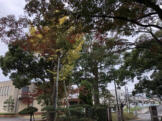


 本校の庭にある樹々も立冬の時と比べても大分色づいてまいりました。曇り空で光量が少ないため紅葉の色映えが写真ではいまいちですが、状況はお伝えできるのではないかと思います。
本校の庭にある樹々も立冬の時と比べても大分色づいてまいりました。曇り空で光量が少ないため紅葉の色映えが写真ではいまいちですが、状況はお伝えできるのではないかと思います。
今週は先生方がお互いの授業を相互に参観して授業改善に役立てるための校内授業研修週間となっています。併せてSGH運営指導協議会や初任研の研究協議会、英語拠点校公開授業等が行われ多くの方が授業を参観にいらっしゃいます。
本校の庭にある樹々も立冬の時と比べても大分色づいてまいりました。曇り空で光量が少ないため紅葉の色映えが写真ではいまいちですが、状況はお伝えできるのではないかと思います。今週は先生方がお互いの授業を相互に参観して授業改善に役立てるための校内授業研修週間となっています。併せてSGH運営指導協議会や初任研の研究協議会、英語拠点校公開授業等が行われ多くの方が授業を参観にいらっしゃいます。
立冬（紅葉だより１）

 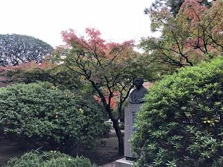
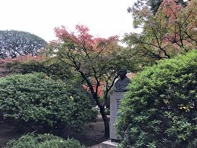 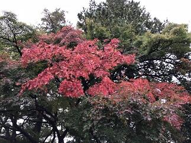
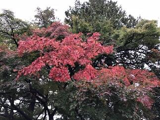 今日は、二十四節気の立冬です。暦の上では、季節は冬に入りました。学校の庭の木々も朝晩の冷え込みで、だいぶ色づいてまいりました。朝晩の冷え込みで体調をくずしたり、空気の乾燥など風邪のウイルスなどが活発に活動しやすい時期です。来週には修学旅行もあり、今学校では、そろそろ流行りだしそうなインフルエンザなどへの対応で手洗いの励行や手のアルコール消毒などの対策を行っています。
今日は、二十四節気の立冬です。暦の上では、季節は冬に入りました。学校の庭の木々も朝晩の冷え込みで、だいぶ色づいてまいりました。朝晩の冷え込みで体調をくずしたり、空気の乾燥など風邪のウイルスなどが活発に活動しやすい時期です。来週には修学旅行もあり、今学校では、そろそろ流行りだしそうなインフルエンザなどへの対応で手洗いの励行や手のアルコール消毒などの対策を行っています。 紅葉情報N0.1

 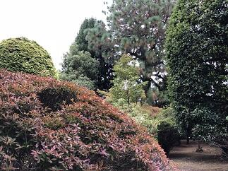 このところ急に寒さが増してきて、特に朝夕の寒さは,なかなか、厳しいものがあります。
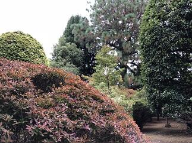 このところ急に寒さが増してきて、特に朝夕の寒さは,なかなか、厳しいものがあります。現在、日の出が５時55分、日の入りが16時51分となっていて、昼間の時間は、およそ11時間と短くなってきてますので、日差しをありがたく感じる今日この頃です。寒暖差が激しいほど紅葉が美しくなるそうですが今年はどうでしょうか。本校の庭の木々もほんとに一部ですが、色づいてきています。あまり寒いのは困りますが、一方で、すばらしい紅葉が見られたらと期待しているところです。学校にお立ち寄りの際は是非木々の様子も気に留めて見てただけるとありがたいです。（写真は10月26日現在）
台風24号の爪痕


 台風24号が、日本列島を縦断しその脅威を全国の至る所にふるっていきました。本校の朝の状況をお伝えします。本校は古木が多く今回のような暴風が来ると多くの樹木が枝を折られてしまいます。今回は、枝だけでなく技能員さん作業場そばの楓が一本根元から折れてしまいました。(写真上段 左と中)今までも生徒や先生方を見守ってくれて、これから秋に向かって綺麗な紅葉を見せてくれたはずなのにと、とても残念で心が痛みます。中庭の本校舎側にあるベンチが風で記念館側に飛んでいたり、東郷池の水面は折れた枝や落ち葉でいっぱいだったり、学思館前の舗道も記念館前の庭園も大きな枝がそこかしこに落ちているなどこれ以上は散らからないといった状態でした。台風25号が今回に近いコースをたどりそうだということですので、これ以上被害がひろがらないことを祈ります。
台風24号が、日本列島を縦断しその脅威を全国の至る所にふるっていきました。本校の朝の状況をお伝えします。本校は古木が多く今回のような暴風が来ると多くの樹木が枝を折られてしまいます。今回は、枝だけでなく技能員さん作業場そばの楓が一本根元から折れてしまいました。(写真上段 左と中)今までも生徒や先生方を見守ってくれて、これから秋に向かって綺麗な紅葉を見せてくれたはずなのにと、とても残念で心が痛みます。中庭の本校舎側にあるベンチが風で記念館側に飛んでいたり、東郷池の水面は折れた枝や落ち葉でいっぱいだったり、学思館前の舗道も記念館前の庭園も大きな枝がそこかしこに落ちているなどこれ以上は散らからないといった状態でした。台風25号が今回に近いコースをたどりそうだということですので、これ以上被害がひろがらないことを祈ります。 短時間豪雨

 昨日7月9日の14:30からSSHの運営指導委員会が地域交流施設において行われました。その会議が終わるころから雨が降り出し、30分間くらいでしたが雷とともにものすごい雨が降りました。マレーシア、タイ、シンガポールなど東南アジアの国々のスコールのように、道路だったところが、あっという間に川に代わるような、まさにバケツで撒いたような強さと量の雨でした。
昨日7月9日の14:30からSSHの運営指導委員会が地域交流施設において行われました。その会議が終わるころから雨が降り出し、30分間くらいでしたが雷とともにものすごい雨が降りました。マレーシア、タイ、シンガポールなど東南アジアの国々のスコールのように、道路だったところが、あっという間に川に代わるような、まさにバケツで撒いたような強さと量の雨でした。この雨で恩恵を受けたとすれば東郷池の水が増えていつになく水がきれいになったことです。普段は泳いでいる姿をはっきり・くっきりとみることができない東郷池の鯉や鮒たちの姿を今日はしっかりととらえることができました。
芒種

 今日は、太陽の黄経が75°にあたる二十四節気でいうところの芒種（ぼうしゅ）です。イネやムギなどの芒(のぎ)のある作物の種を播(ま)く時節というところから由来しているそうです。今は田植の時期はかなり早まっていますが、昔の田植の時期はこのころでした。ちょうど梅雨に入る時期でもあり、少し蒸し暑くじめじめする季節のはじまりです。梅雨は、池の魚などの水中動物や草花や樹木などの植物は言うに及ばす、生物に雨の恵みをもたらす大切な時期です。東郷池の鯉や鮒たちも池の水面をたたく雨のリズムや日光の微妙な光加減に、梅雨入りを感じてか、なんとなく元気そうでした。
今日は、太陽の黄経が75°にあたる二十四節気でいうところの芒種（ぼうしゅ）です。イネやムギなどの芒(のぎ)のある作物の種を播(ま)く時節というところから由来しているそうです。今は田植の時期はかなり早まっていますが、昔の田植の時期はこのころでした。ちょうど梅雨に入る時期でもあり、少し蒸し暑くじめじめする季節のはじまりです。梅雨は、池の魚などの水中動物や草花や樹木などの植物は言うに及ばす、生物に雨の恵みをもたらす大切な時期です。東郷池の鯉や鮒たちも池の水面をたたく雨のリズムや日光の微妙な光加減に、梅雨入りを感じてか、なんとなく元気そうでした。 墨流し
 このところの暑さや東郷池のエアレーションの不足なのか、原因ははっきりとわかりませんが、池のバクテリアの環境が悪化しているようで、池の水面に油膜の模様ができています（写真）。ここでは、池の水の環境悪化とは別の視点で、この模様自体に視点を当ててみると、この油膜の模様ですが、「墨流し」と呼ばれる水面に落とした墨汁や顔料を吹き散らすとできる模様と原理は同じで、染物では「墨流し染め」の技法が日本では古くから使われています。数学では「アトラクター attractor」と呼ばれている分野で、ある力学系がそこに向かって時間発展をする集合を言います。水質問題とみるか芸術の対象として見るか数学の対象と見るか、同じ物を見ても物の見方は多種多様ですね。
このところの暑さや東郷池のエアレーションの不足なのか、原因ははっきりとわかりませんが、池のバクテリアの環境が悪化しているようで、池の水面に油膜の模様ができています（写真）。ここでは、池の水の環境悪化とは別の視点で、この模様自体に視点を当ててみると、この油膜の模様ですが、「墨流し」と呼ばれる水面に落とした墨汁や顔料を吹き散らすとできる模様と原理は同じで、染物では「墨流し染め」の技法が日本では古くから使われています。数学では「アトラクター attractor」と呼ばれている分野で、ある力学系がそこに向かって時間発展をする集合を言います。水質問題とみるか芸術の対象として見るか数学の対象と見るか、同じ物を見ても物の見方は多種多様ですね。 日々是感謝
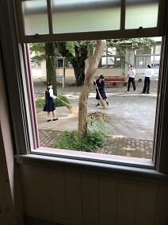保護者の皆さま、５月１２日の授業参観、PTA総会、進路講演会にご参加いただきありがとうございました。特に、この総会までで、任期を終えられた松田PTA前会長をはじめとする前PTA役員の皆さま、本当に今までありがとうございました。これからも、ご支援ご協力のほど、よろしくお願いいたします。今回もそうですが、この１か月余り、本校が多くの方々に愛され支えられているんだなぁと心から感じられる機会をたくさんいただいています。今日も、早朝から剣道部の生徒さんたちが通路を箒で掃除してくれていました。そのおかげで、きれいになっている通路を多くの生徒が通学できる訳です。もし、普段見慣れている場所が、いつもきれいになっているとしたら、そこには誰かの手が入っているのかもしれません。当たり前にきれいな状態を保つには、普段から汚さないようにすることと、汚れに気がついたらきれいにすることの両方が大切なんでしょう。そのためには、まずはきれいになっていることに気がついて感謝できる心を持てるといいですね。
柳緑花紅
今日は絵に描いたような五月晴れに恵まれ、公開授業、PTA総会、進路講演会と重要な行事が無事開催できそうです。また、ソフトテニス、囲碁、将棋、柔道、バスケットボール、卓球、剣道、バレーボールのそれぞれの部活動は、関東大会等の県予選で試合に臨んでいます。日ごろから鍛えた力を存分に発揮して目指す目標を達成できることを期待します。話は変わりますが、普段の土曜日の朝は、東郷池の鯉たちは朝御飯は無しですが、今日はしっかりと食べることができて幸せそうでした。（写真左）昨日も学校の敷地内にある草花について話をさせていただきましたが、そこにあるのが当たり前のような感覚になっていると、特に身近にあるものに対して、美しさやありがたみに気付くのが難しいものです。ありふれたものに秘められたかけがえのなさに気付くことができれば毎日の生活は今以上に心豊かに穏やかに過ごせるのではないでしょうか。さて、昨日に引き続きお花が咲いている場所を見つけていただきたく写真を載せました。これは昨日の草花よりは難易度が高くなると思いますが、頑張って見つけてみてください。
 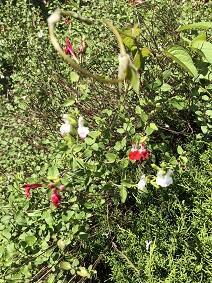
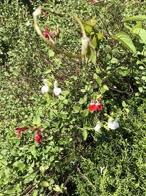
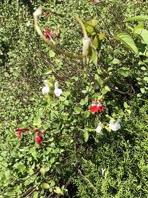 百花為誰開
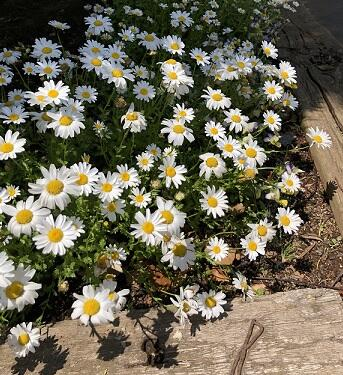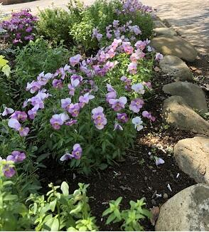このところ急に３月の寒さに戻ったり、一日のなかでも気温の変化が激しい日が続いていますが、校内を見て歩くと「躑躅」のような大きな花はありませんが、野の草たちも含め多くの草花が小さな花を咲かせています。校内で、結構目立つのはブタナ（一見とっても成長の良いタンポポに見える）が長い茎の先に黄色の花を咲かせています。花は、誰のためでもなく、ただ無心に咲いています。そこにはいのちの静かな輝きが見てとれます。その様子は、とても尊く清らかで見る人の心を打ちます。
明日は、公開授業の日ですが、学校にお越しの際は、学校内を散策していただき、花々もぜひご覧ください。なお、今日掲載した花々は、学校で植えたものですが、学校のどこで咲いているか探してみてください。
明日は、公開授業の日ですが、学校にお越しの際は、学校内を散策していただき、花々もぜひご覧ください。なお、今日掲載した花々は、学校で植えたものですが、学校のどこで咲いているか探してみてください。